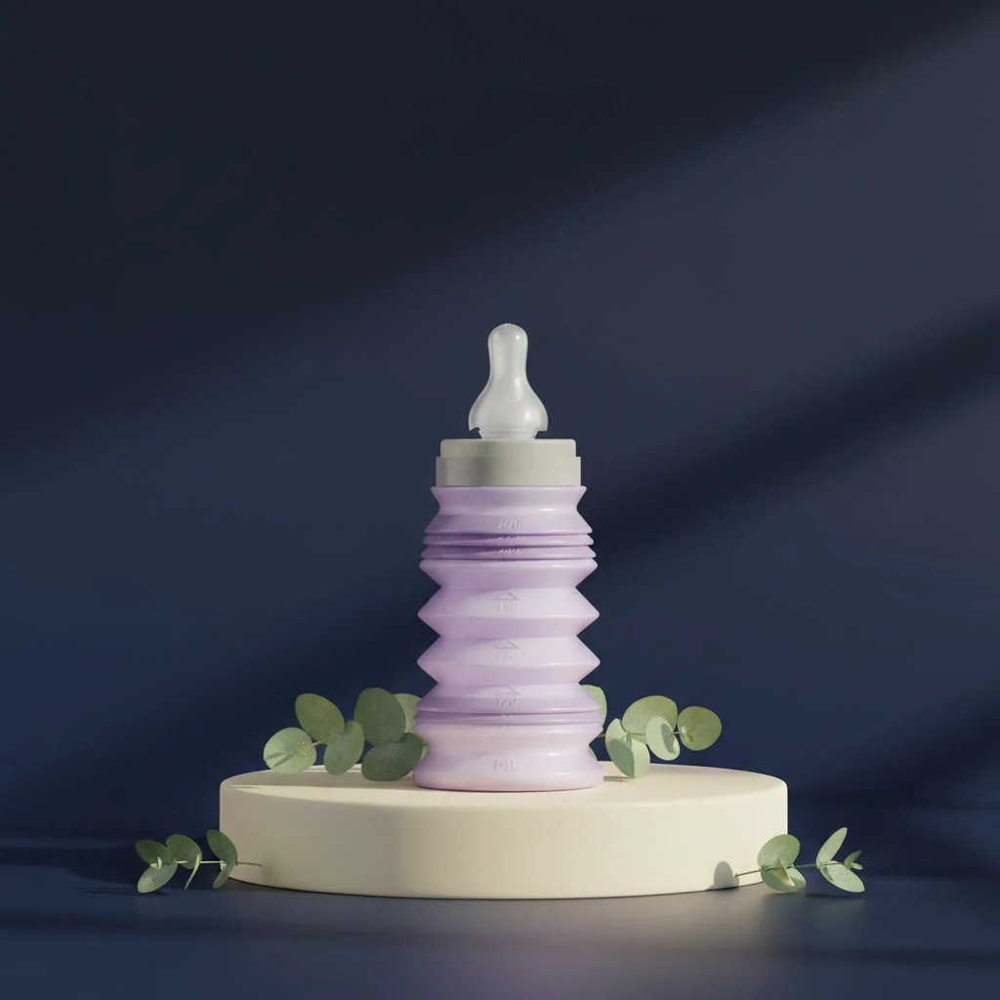
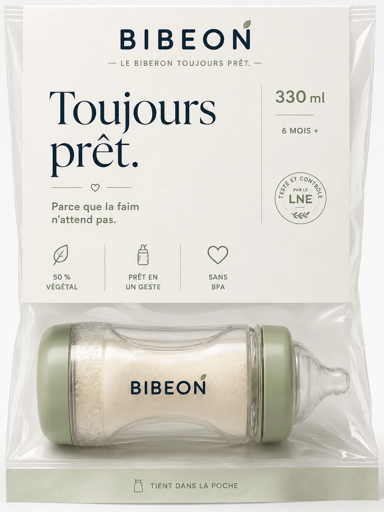
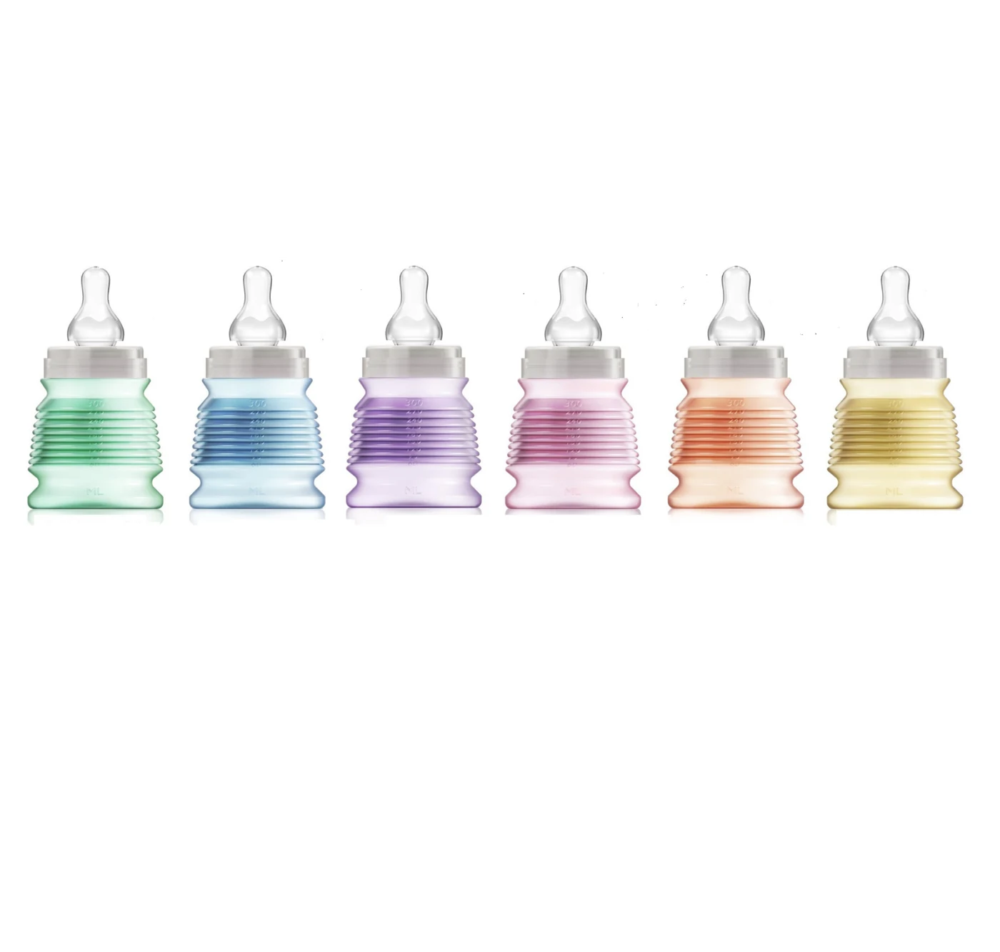
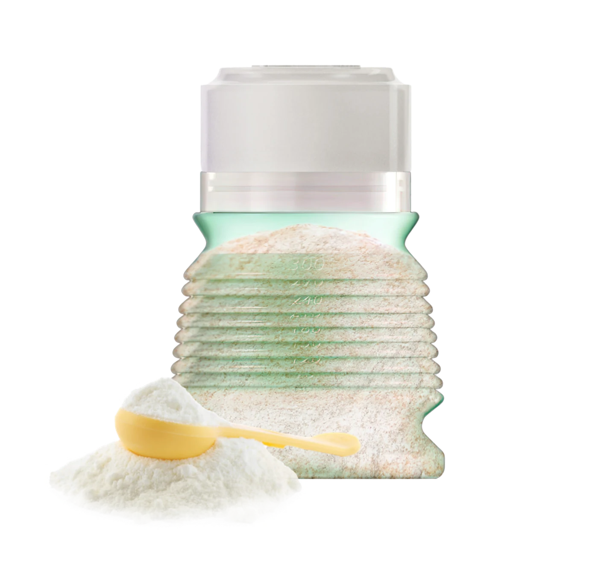
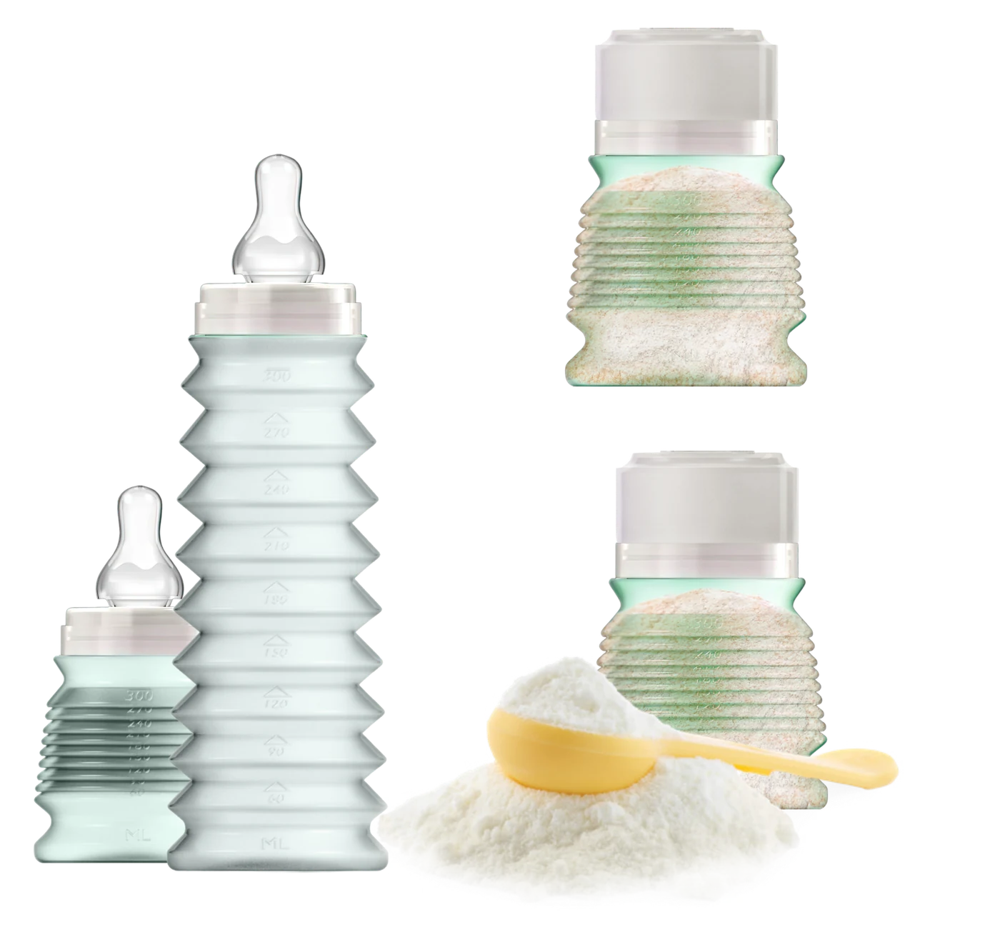
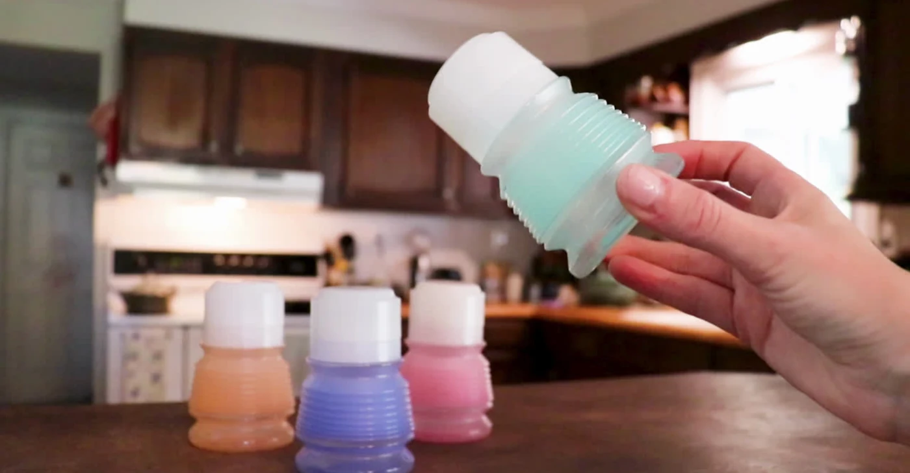
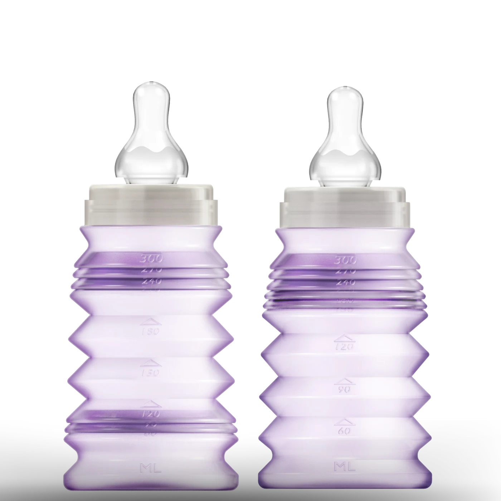
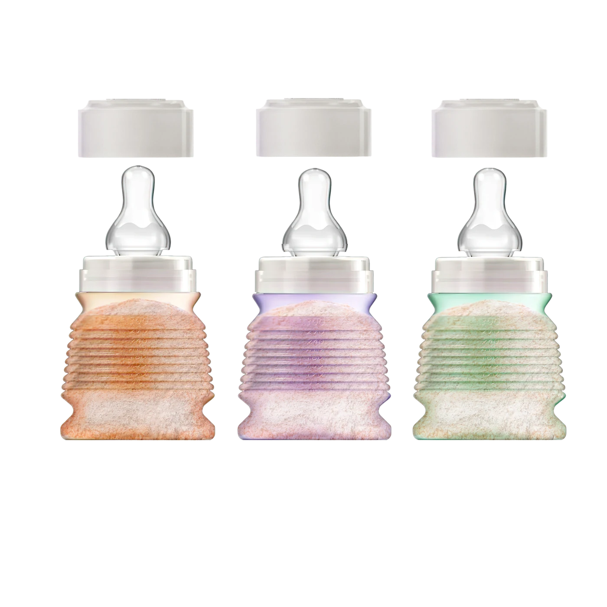
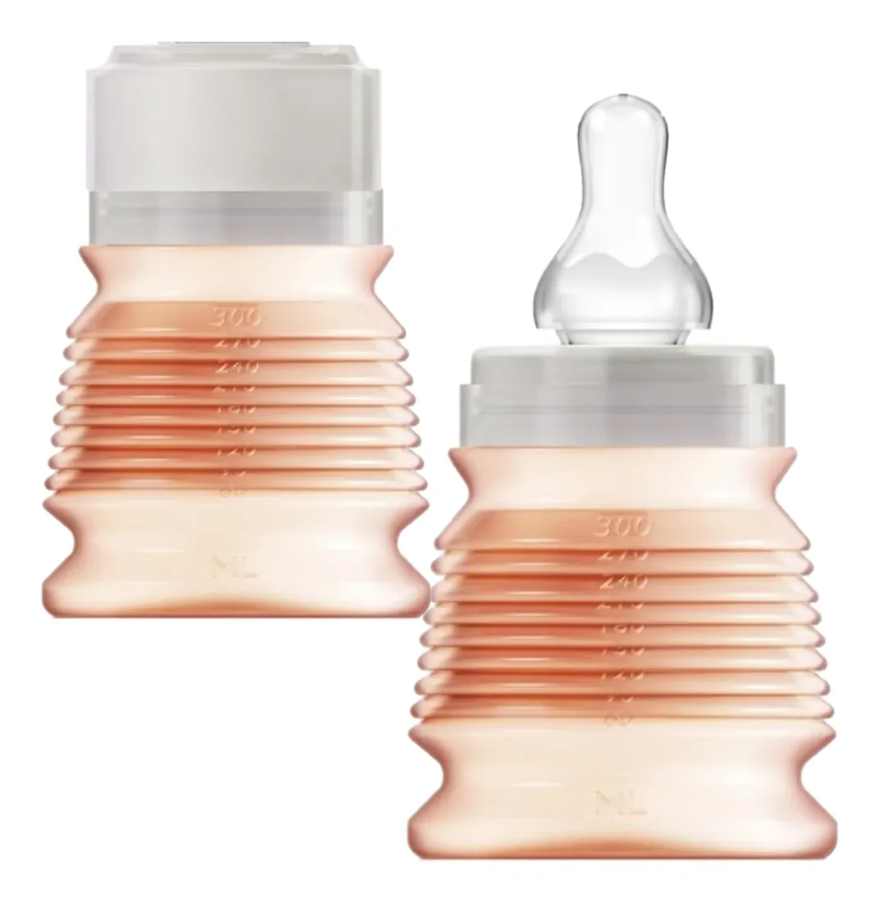

Dosez
Placez la quantité de lait nécessaire dans le biberon replié avant de sortir.
Le biberon nomade pliable
Avant de sortir, placez votre dose de lait en poudre dans le biberon replié. Au moment du repas, dépliez, ajoutez l’eau et nourrissez bébé.


Comment ça marche ?
Placez la quantité de lait nécessaire dans le biberon replié avant de sortir.

Au moment du repas, dépliez le corps souple du biberon.

Ajoutez l’eau, mélangez puis donnez le biberon à bébé.

Compact quand vous partez
Le format accordéon permet au biberon de rester compact dans le sac, puis de retrouver sa capacité au moment du repas.
Une palette douce

Préparé par vous
Le lait en poudre est placé par le parent avant la sortie. Le capuchon protège le contenu jusqu’au moment du repas.


BIBEON en action



Des preuves qui rassurent
Des essais réalisés par le Laboratoire national de métrologie et d’essais.
Une preuve à présenter selon le libellé exact du rapport officiel.
Une fabrication française valorisée avec sobriété.
Notre boutique

Le biberon pliable pour vos sorties.
Le produit et son packaging premium.

Une sélection de teintes douces.

Une version chaleureuse et lumineuse.